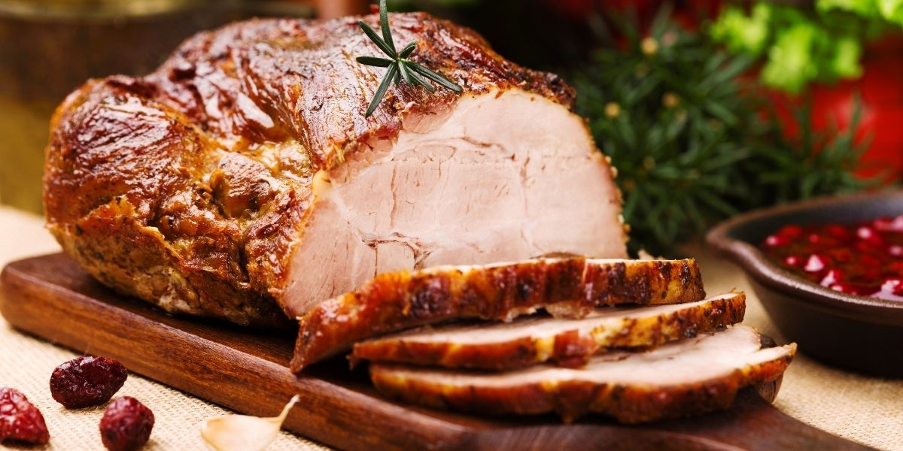
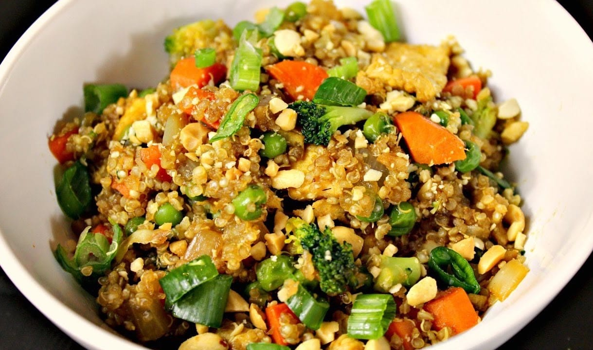

steak
- 22Minutes
- 13Ingridients
- 1serve
Butcher (or hanger) steak is great pan cooked, broiled, or grilled. It takes to marinades wonderfully, and really can be substituted for any cut of steak. Just be sure to take the time to trim it well. Thank you for letting me do this..

Quinoa Fried Rice
- 14Minutes
- 8Ingridients
- 1serve
This is a great recipe that I found in my Grandma's recipe book.Great side dish and substitute for fried rice, this was a family favorite. Indian omlete is the best . I am naow just feeling words to mak it look bigger.

Turkey
- 8Hour
- 12Ingridients
- 6serve
Thanksgiving turkey has been given a Cuban twist! We celebrate this American holiday by preparing a turkeym and marinating it . god damn it looks deicious damnnn boyyy it is good Now I am writing it to make it longer.